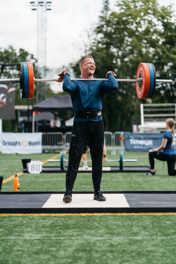

Moi! Nimeni on Janne Tolppanen. 35 vuotias kahden lapsen isä ja asun Liedossa. Olen työskennellyt viimeiset 8 vuotta Turussa palomiehenä päätoimenani, lisäksi teen sivutöitä omalla toiminimelläni, pääasiassa ongelmapuiden kaatoa ja muita ns. kaupunkimetsurin töitä. Töitä teen 24 tunnin vuoroissa joiden välissä on 3 päivää vapaata. Tämä mahdollistaa hyvin sivutyön ja jatkossa myös opiskelun.
Olen aina touhunnut tietokoneiden kanssa ja nuorempana opiskelinkin datanomiksi mutta ura meni kuitenkin toiseen suuntaan. Kiinnostus tietokoneisiin on kuitenkin aina ollut taustalla ja nyt on herännyt into työskennellä alalla.
Mitä?
Suunnitelmani on mennä opiskelemaan tieto- ja viestintätekniikkaa työn ohessa ja tehdä siinä sivussa pieniä projekteja tutuille yrityksille. Olen nyt opiskellut web-tekniikkaa ja muutama tuttava joiden yritysten nettisivut kaipaavat päivitystä ovatkin minulta jo kyselleet asiasta. Jos vastaan tulee tilaisuus myydä palveluja myös muille tai työllistyä alan yritykseen sivutoimisena, tartun varmasti myös siihen.
Tällä hetkellä minua kiinnostaa ala kokonaisvaltaisesti, enkä ole varma, haluaisinko suuntautua kyberturvallisuuden, ohjelmoinnin vai web-tekniikan pariin. Muutama vuosi koulussa varmasti selkiyttää tilannetta.
Yhteyden minuun saa parhaiten sivun alalaidasta löytyvästä sähköpostiosoitteesta.
